Tip
An interactive online version of this notebook is available, which can be
accessed via

Alternatively, you may download this notebook and run it offline.
A composite electrode particle model#
A composite electrode particle model is developed for (negative) electrodes with two phases, e.g. graphite/silicon in LG M50 battery cells. The current version is demonstrated for negative composite electrodes only but is easily extended to positive composite electrodes. The reference is at the end of this notebook.
How to use the model#
Let us set up PyBaMM
[30]:
# %pip install "pybamm[plot,cite]" -q # install PyBaMM if it is not installed
import os
import timeit
import matplotlib.pyplot as plt
from matplotlib import style
import pybamm
style.use("ggplot")
os.chdir(pybamm.__path__[0] + "/..")
Choose the option {"particle phases": ("2", "1")} to load the composite electrode particle model by specifying that there are two particle phases (graphite and silicon) in the negative electrode. The parameter set “Chen2020_composite” includes parameters for silicon as a secondary particle
[31]:
start = timeit.default_timer()
model = pybamm.lithium_ion.DFN(
{
"particle phases": ("2", "1"),
"open-circuit potential": (("single", "current sigmoid"), "single"),
}
)
param = pybamm.ParameterValues("Chen2020_composite")
param.update({"Upper voltage cut-off [V]": 4.5})
param.update({"Lower voltage cut-off [V]": 2.5})
param.update(
{
"Primary: Maximum concentration in negative electrode [mol.m-3]": 28700,
"Primary: Initial concentration in negative electrode [mol.m-3]": 23000,
"Primary: Negative particle diffusivity [m2.s-1]": 5.5e-14,
"Secondary: Negative particle diffusivity [m2.s-1]": 1.67e-14,
"Secondary: Initial concentration in negative electrode [mol.m-3]": 277000,
"Secondary: Maximum concentration in negative electrode [mol.m-3]": 278000,
}
)
Single Cycle Simulations#
Define a current loading
[32]:
C_rate = 0.5
capacity = param["Nominal cell capacity [A.h]"]
I_load = C_rate * capacity
t_eval = [0, 10000]
param["Current function [A]"] = I_load
It is very easy to vary the relative volume fraction of each phase. The following example shows how to compare the results of batteries with three relative volume fractions (0.001, 0.04, 0.1) of silicon.
[33]:
v_si = [0.001, 0.04, 0.1]
total_am_volume_fraction = 0.75
solution = []
for v in v_si:
param.update(
{
"Primary: Negative electrode active material volume fraction": (1 - v)
* total_am_volume_fraction, # primary
"Secondary: Negative electrode active material volume fraction": v
* total_am_volume_fraction,
}
)
print(v)
sim = pybamm.Simulation(
model,
parameter_values=param,
)
solution.append(sim.solve(t_eval=t_eval))
stop = timeit.default_timer()
print("running time: " + str(stop - start) + "s")
0.001
0.04
0.1
running time: 0.8212654160161037s
Results#
Compare the cell voltages of the three cells in this example, to see how silicon affects the output capacity
[34]:
fig, axs = plt.subplots(2, 3, figsize=(18, 10))
for i, v in enumerate(v_si):
solution[i].plot_voltage_components(
ax=axs[0, i],
split_by_electrode=True,
electrode_phases=("primary", "primary"),
show_plot=False,
show_legend=(i == 2),
)
solution[i].plot_voltage_components(
ax=axs[1, i],
split_by_electrode=True,
electrode_phases=("secondary", "primary"),
show_plot=False,
show_legend=(i == 2),
)
axs[0, i].set_title(f"{v * 100:.1f}% Si volume fraction", fontsize=14)
plt.show()
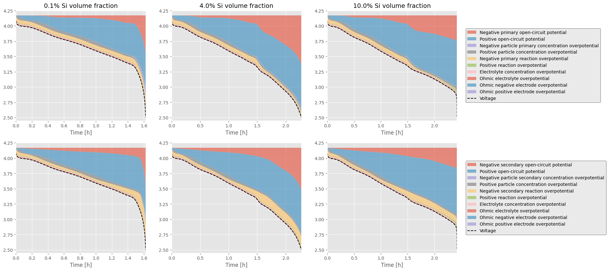
[35]:
ltype = ["k-", "r--", "b-.", "g:", "m-", "c--", "y-."]
for i in range(0, len(v_si)):
t_i = solution[i]["Time [s]"].entries / 3600
V_i = solution[i]["Voltage [V]"].entries
plt.plot(t_i, V_i, ltype[i], label="$V_\mathrm{si}=$" + str(v_si[i]))
plt.xlabel("Time [h]")
plt.ylabel("Voltage [V]")
plt.legend()
[35]:
<matplotlib.legend.Legend at 0x136936960>
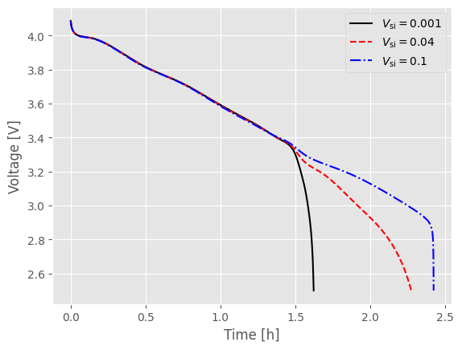
Results of interfacial current density in silicon
[36]:
plt.figure()
for i in range(0, len(v_si)):
t_i = solution[i]["Time [s]"].entries / 3600
j_n_p1_av = solution[i][
"X-averaged negative electrode primary interfacial current density [A.m-2]"
].entries
plt.plot(t_i, j_n_p1_av, ltype[i], label="$V_\mathrm{si}=$" + str(v_si[i]))
plt.xlabel("Time [h]")
plt.ylabel("Averaged interfacial current density [A/m$^{2}$]")
plt.legend()
plt.title("Graphite")
plt.figure()
for i in range(0, len(v_si)):
t_i = solution[i]["Time [s]"].entries / 3600
j_n_p2_av = solution[i][
"X-averaged negative electrode secondary interfacial current density [A.m-2]"
].entries
plt.plot(t_i, j_n_p2_av, ltype[i], label="$V_\mathrm{si}=$" + str(v_si[i]))
plt.xlabel("Time [h]")
plt.ylabel("Averaged interfacial current density [A/m$^{2}$]")
plt.legend()
plt.title("Silicon")
[36]:
Text(0.5, 1.0, 'Silicon')
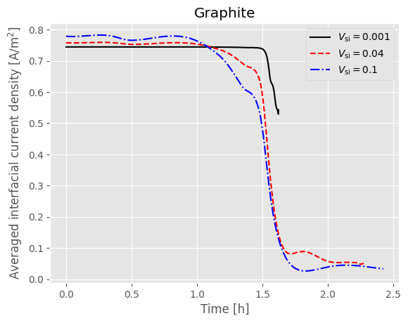
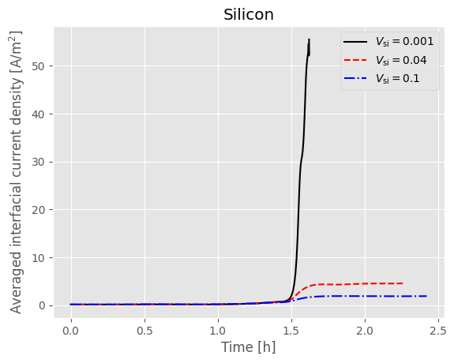
Results of interfacial current density in graphite
[37]:
plt.figure()
for i in range(0, len(v_si)):
t_i = solution[i]["Time [s]"].entries / 3600
j_n_p1_Vav = solution[i][
"X-averaged negative electrode primary volumetric interfacial current density [A.m-3]"
].entries
plt.plot(t_i, j_n_p1_Vav, ltype[i], label="$V_\mathrm{si}=$" + str(v_si[i]))
plt.xlabel("Time [h]")
plt.ylabel("Averaged volumetric interfacial current density [A/m$^{3}$]")
plt.legend()
plt.title("Graphite")
plt.figure()
for i in range(0, len(v_si)):
t_i = solution[i]["Time [s]"].entries / 3600
j_n_p2_Vav = solution[i][
"X-averaged negative electrode secondary volumetric interfacial current density [A.m-3]"
].entries
plt.plot(t_i, j_n_p2_Vav, ltype[i], label="$V_\mathrm{si}=$" + str(v_si[i]))
plt.xlabel("Time [h]")
plt.ylabel("Averaged volumetric interfacial current density [A/m$^{3}$]")
plt.legend()
plt.title("Silicon")
[37]:
Text(0.5, 1.0, 'Silicon')
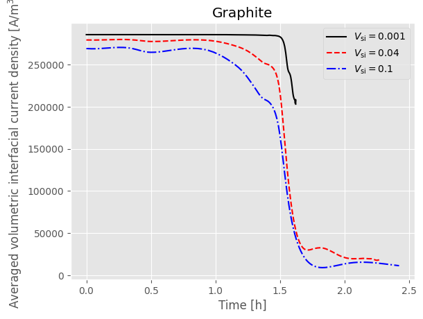
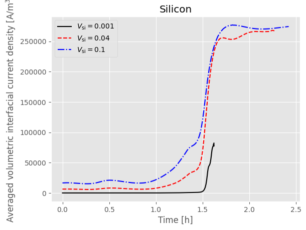
Results of average lithium concentration
[38]:
plt.figure()
for i in range(0, len(v_si)):
t_i = solution[i]["Time [s]"].entries / 3600
c_s_xrav_n_p1 = solution[i][
"Average negative primary particle concentration"
].entries
plt.plot(t_i, c_s_xrav_n_p1, ltype[i], label="$V_\mathrm{si}=$" + str(v_si[i]))
plt.xlabel("Time [h]")
plt.ylabel("$c_\mathrm{g}/c_\mathrm{g,max}$")
plt.legend()
plt.title("Graphite")
plt.figure()
for i in range(0, len(v_si)):
t_i = solution[i]["Time [s]"].entries / 3600
c_s_xrav_n_p2 = solution[i][
"Average negative secondary particle concentration"
].entries
plt.plot(t_i, c_s_xrav_n_p2, ltype[i], label="$V_\mathrm{si}=$" + str(v_si[i]))
plt.xlabel("Time [h]")
plt.ylabel("$c_\mathrm{si}/c_\mathrm{si,max}$")
plt.legend()
plt.title("Silicon")
[38]:
Text(0.5, 1.0, 'Silicon')
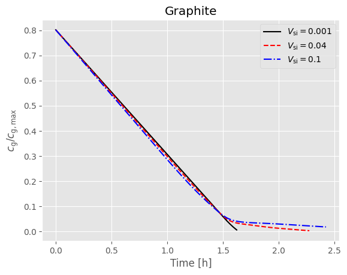
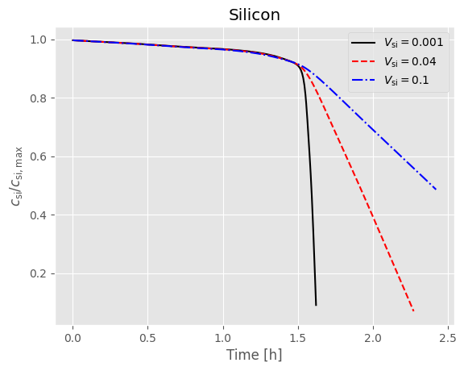
Results of equilibrium potential
[39]:
plt.figure()
for i in range(0, len(v_si)):
t_i = solution[i]["Time [s]"].entries / 3600
ocp_p1 = solution[i][
"X-averaged negative electrode primary open-circuit potential [V]"
].entries
plt.plot(t_i, ocp_p1, ltype[i], label="$V_\mathrm{si}=$" + str(v_si[i]))
plt.xlabel("Time [h]")
plt.ylabel("Equilibruim potential [V]")
plt.legend()
plt.title("Graphite")
plt.figure()
for i in range(0, len(v_si)):
t_i = solution[i]["Time [s]"].entries / 3600
ocp_p2 = solution[i][
"X-averaged negative electrode secondary open-circuit potential [V]"
].entries
plt.plot(t_i, ocp_p2, ltype[i], label="$V_\mathrm{si}=$" + str(v_si[i]))
plt.xlabel("Time [h]")
plt.ylabel("Equilibruim potential [V]")
plt.legend()
plt.title("Silicon")
plt.figure()
for i in range(0, len(v_si)):
t_i = solution[len(v_si) - 1 - i]["Time [s]"].entries / 3600
ocp_p = solution[len(v_si) - 1 - i][
"X-averaged positive electrode open-circuit potential [V]"
].entries
plt.plot(
t_i,
ocp_p,
ltype[len(v_si) - 1 - i],
label="$V_\mathrm{si}=$" + str(v_si[len(v_si) - 1 - i]),
)
plt.xlabel("Time [h]")
plt.ylabel("Equilibrium potential [V]")
plt.legend()
plt.title("NMC811")
[39]:
Text(0.5, 1.0, 'NMC811')
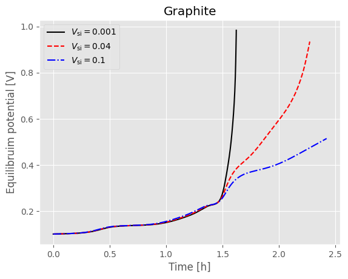
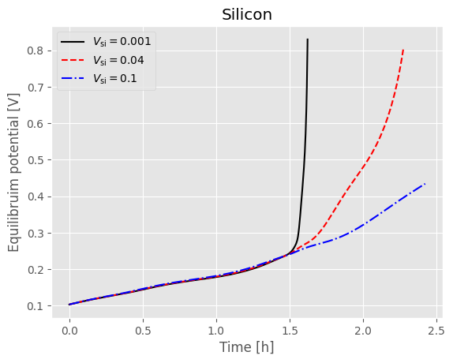
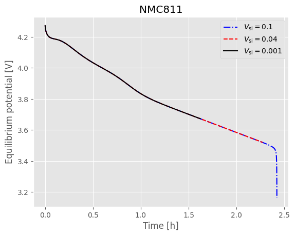
Multi-Cycle Simulations#
For multi-cycling, an experiment definition for static C/2 discharge and charge cycling is presented.
[40]:
experiment = pybamm.Experiment(
[
(
"Discharge at C/2 until 3.0 V",
"Rest for 1 hour",
"Charge at C/2 until 4.2 V",
"Rest for 1 hour",
),
]
* 2
)
The solution is reintroduced, with calc_esoh=False passed into the solve function. Currently, composite electrode state of health predictions are not included in this model.
[41]:
solution = []
for v in v_si:
param.update(
{
"Primary: Negative electrode active material volume fraction": (1 - v)
* total_am_volume_fraction, # primary
"Secondary: Negative electrode active material volume fraction": v
* total_am_volume_fraction,
}
)
print(v)
sim = pybamm.Simulation(
model,
experiment=experiment,
parameter_values=param,
)
solution.append(sim.solve(calc_esoh=False))
stop = timeit.default_timer()
print("running time: " + str(stop - start) + "s")
0.001
0.04
0.1
running time: 4.325905333011178s
Cycling Results#
The previously displayed single discharge results can be extended to the cycling solution. As an example, voltage is displayed below.
[42]:
ltype = ["k-", "r--", "b-.", "g:", "m-", "c--", "y-."]
for i in range(0, len(v_si)):
t_i = solution[i]["Time [s]"].entries / 3600
V_i = solution[i]["Voltage [V]"].entries
plt.plot(t_i, V_i, ltype[i], label="$V_\mathrm{si}=$" + str(v_si[i]))
plt.xlabel("Time [h]")
plt.ylabel("Voltage [V]")
plt.legend()
[42]:
<matplotlib.legend.Legend at 0x1347eaa20>

References#
The relevant papers for this notebook are:
[43]:
pybamm.print_citations()
[1] Weilong Ai, Niall Kirkaldy, Yang Jiang, Gregory Offer, Huizhi Wang, and Billy Wu. A composite electrode model for lithium-ion batteries with silicon/graphite negative electrodes. Journal of Power Sources, 527:231142, 2022. URL: https://www.sciencedirect.com/science/article/pii/S0378775322001604, doi:https://doi.org/10.1016/j.jpowsour.2022.231142.
[2] Joel A. E. Andersson, Joris Gillis, Greg Horn, James B. Rawlings, and Moritz Diehl. CasADi – A software framework for nonlinear optimization and optimal control. Mathematical Programming Computation, 11(1):1–36, 2019. doi:10.1007/s12532-018-0139-4.
[3] Von DAG Bruggeman. Berechnung verschiedener physikalischer konstanten von heterogenen substanzen. i. dielektrizitätskonstanten und leitfähigkeiten der mischkörper aus isotropen substanzen. Annalen der physik, 416(7):636–664, 1935.
[4] Chang-Hui Chen, Ferran Brosa Planella, Kieran O'Regan, Dominika Gastol, W. Dhammika Widanage, and Emma Kendrick. Development of Experimental Techniques for Parameterization of Multi-scale Lithium-ion Battery Models. Journal of The Electrochemical Society, 167(8):080534, 2020. doi:10.1149/1945-7111/ab9050.
[5] Marc Doyle, Thomas F. Fuller, and John Newman. Modeling of galvanostatic charge and discharge of the lithium/polymer/insertion cell. Journal of the Electrochemical society, 140(6):1526–1533, 1993. doi:10.1149/1.2221597.
[6] Charles R. Harris, K. Jarrod Millman, Stéfan J. van der Walt, Ralf Gommers, Pauli Virtanen, David Cournapeau, Eric Wieser, Julian Taylor, Sebastian Berg, Nathaniel J. Smith, and others. Array programming with NumPy. Nature, 585(7825):357–362, 2020. doi:10.1038/s41586-020-2649-2.
[7] Alan C. Hindmarsh. The PVODE and IDA algorithms. Technical Report, Lawrence Livermore National Lab., CA (US), 2000. doi:10.2172/802599.
[8] Alan C. Hindmarsh, Peter N. Brown, Keith E. Grant, Steven L. Lee, Radu Serban, Dan E. Shumaker, and Carol S. Woodward. SUNDIALS: Suite of nonlinear and differential/algebraic equation solvers. ACM Transactions on Mathematical Software (TOMS), 31(3):363–396, 2005. doi:10.1145/1089014.1089020.
[9] Valentin Sulzer, Scott G. Marquis, Robert Timms, Martin Robinson, and S. Jon Chapman. Python Battery Mathematical Modelling (PyBaMM). Journal of Open Research Software, 9(1):14, 2021. doi:10.5334/jors.309.